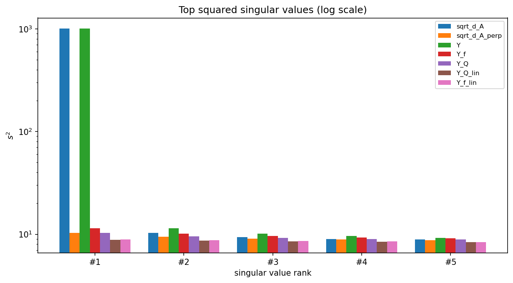
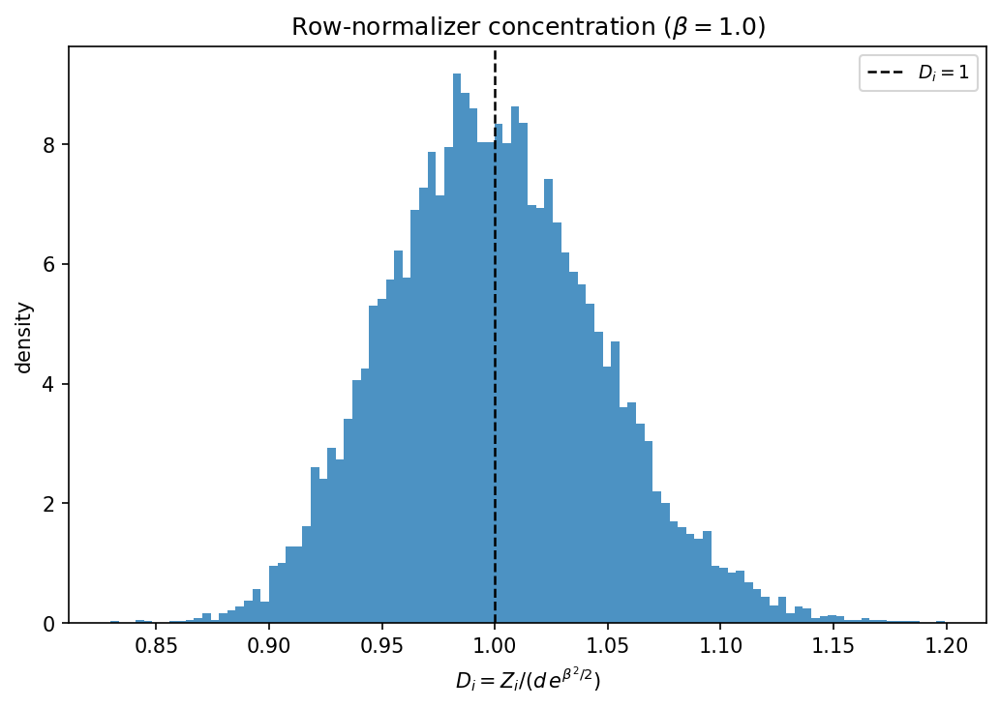
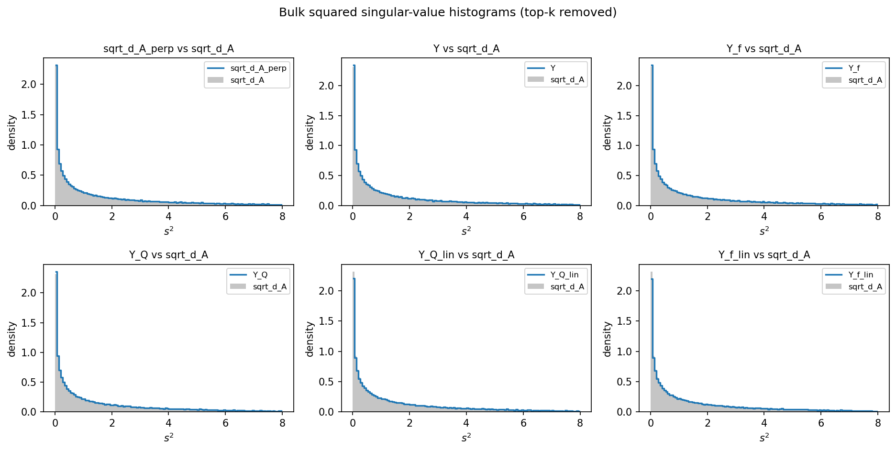
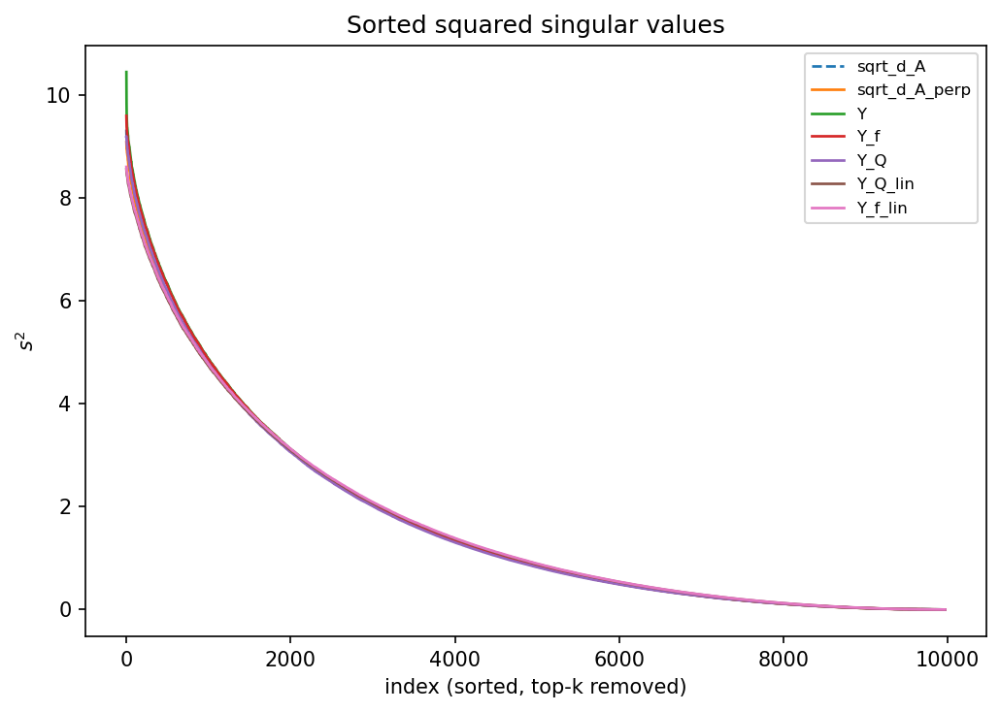

Gaussian Equivalence for Self-Attention Spectra
What does the singular-value spectrum of a freshly-initialized softmax self-attention matrix actually look like? The surprising answer: strip off one rank-one spike and what remains is, to leading order, the spectrum of a simple linear Gaussian matrix. This post follows Gaussian Equivalence for Self-Attention Spectra and verifies its central claim empirically: in the high-dimensional limit the centered, scaled attention matrix $\sqrt{\ell}\,(A-u_\ell u_\ell^\top)$ has the same bulk squared-singular-value distribution as an explicit Gaussian-equivalent linear model. The whole story is checked on a $d=1000$ experiment whose numbers are reproduced by the companion notebook.
The idea: attention = a rank-one mode + a Gaussian bulk
Softmax attention is nonlinear and its rows are coupled through a shared normalizer, so its spectrum has no business being simple. Yet in the proportional high-dimensional regime a clean decomposition emerges. The attention matrix splits into a rank-one uniform-averaging mode — every row is nearly the uniform distribution, contributing a single large Perron singular value — plus a small diffusive fluctuation whose bulk spectral law is deterministic and matches that of a purely linear random matrix.
The attention matrix
Take an input sequence $X\in\mathbb R^{\ell\times d}$, query/key weights $W^Q,W^K\in\mathbb R^{d\times d_{qk}}$ with i.i.d. $\mathcal N(0,1)$ entries, and form the score matrix $S=\tfrac{1}{\sqrt{d_{qk}}}\,XW^Q(W^K)^\top X^\top$. The experiment uses the clean reduction $\ell=d=d_{qk}$ and $X=I_d$, so the score matrix is simply
Softmax over each row gives the row-stochastic attention matrix, and the uniform baseline is its rank-one mean:
The object of interest is the centered fluctuation around the uniform mode,
where $\beta>0$ is an inverse-temperature. All the action is in $A_\perp$: the uniform mode $u_d u_d^\top$ carries the one big singular value, and $A_\perp$ carries the bulk.
The deterministic normalizer and the nonlinearity $f$
The row normalizers $Z_i$ are what make attention rows dependent. The key simplification is that for large $d$ they concentrate: since each $S_{ij}\approx\mathcal N(0,1/d)\cdot\sqrt d$ behaves like a standard Gaussian $\chi$, the law of large numbers gives
Replacing $Z_i$ by this deterministic value turns each entry into a pointwise nonlinearity of the score:
so that the centered, scaled fluctuation is governed entirely by $f$ applied to the scores:
The function $f$ is centered ($\mathbb E[f(\chi)]=0$) and, remarkably, its whole spectral effect is summarized by just two scalars — a linear coefficient and a variance:
The convexity inequality $e^{x}\ge 1+x$ gives $\theta_1\ge\theta_2$, with equality only at $\beta=0$; $\theta_1-\theta_2=e^{\beta^2}-1-\beta^2\ge 0$ is exactly the non-linear "residual" energy that a linear model cannot capture with the score alone.
The Gaussian-equivalent linear model
Here is the heart of the result. By an orthogonal (Stein) projection, the scalar random variable $f(\chi)$ can be split into the part correlated with $\chi$ plus an independent Gaussian residual carrying the leftover variance:
Promoting this to matrices — the score $S/\sqrt d$ plays the role of $\chi$, and an independent Gaussian $W/\sqrt d$ plays the role of $\eta$ — turns the nonlinear $f(S)/\sqrt d$ into a linear surrogate. With the exact statistics of $f$ this is the Gaussian-equivalent model:
This is not an entrywise equality — the two matrices are entirely different objects. It is an asymptotic statement about their bulk singular-value distributions. In the proportional regime $d,\ell,d_{qk}\to\infty$ with $\ell/d\to\gamma$ and $d_{qk}/d\to\psi$, the theory shows two things:
- Rank-one dominance: $s_1(A)\to 1$ almost surely — the top singular value is exactly the uniform Perron mode, nothing else.
- Bulk equivalence: the squared-singular-value law of $\sqrt\ell\,A_\perp$ converges to the same limiting law $\nu_\infty(\beta,\gamma,\psi)$ as that of $Y_{\text{lin}}^f$.
Together these give the practical decomposition advertised in the introduction,
a rank-one averaging mode plus a diffusive bulk with a deterministic spectral law.
A polynomial bridge
To connect the true nonlinearity to its linear surrogate the paper interposes a
polynomial model: replace $e^{(\cdot)}$ by its truncated Taylor expansion
$P_n(x)=\sum_{k
$Q_n$ has its own statistics $\theta_1^Q=\mathbb E[Q_n(\chi)^2]$ and
$\theta_2^Q=(\mathbb E[Q_n'(\chi)])^2$ (estimated by Monte-Carlo), and its own Gaussian-equivalent
$Y_{\text{lin}}^Q=\sqrt{\theta_2^Q}\,S/\sqrt d+\sqrt{\theta_1^Q-\theta_2^Q}\,W/\sqrt d$. As the
degree grows, $Q_n\to f$ and the two equivalences coincide.
The experiment builds seven matrices that step from the true attention down to the linear
Gaussian equivalent. Comparing their bulk spectra shows the equivalence tighten rung by rung.
A single high-dimensional draw is already enough to see the limiting behaviour. The reported run
averages over $10$ independent trials at $d=1000$; each trial draws fresh Gaussian
$W^Q,W^K,W$, builds all seven models, and compares their squared-singular-value
bulk (after discarding the top $3$ values, which hold any rank-one spikes) against the
cleanest reference
All three theoretical claims come out cleanly at $d=1000$. First, the rank-one mode: the top
squared singular value of $\sqrt d\,A$ (and of the deterministic-normalizer model $Y$) sits at
$\sim\!1000$, while every centered/linear model has no such spike — its largest bulk value is
only $\sim\!10$.

Second, the deterministic-normalizer approximation that everything rests on. The diagnostic
$D_i=Z_i/(d\,e^{\beta^2/2})$ concentrates tightly at $1$ (mean $0.99994$, std $0.047$, worst-case
deviation $0.199$ across all $10^4$ rows) — exactly what licenses replacing $Z_i$ by
$d\,e^{\beta^2/2}$.

Third — the main event — bulk spectral equivalence. Once the top-3 values are removed, the
squared-singular-value histograms of the nonlinear models and their linear Gaussian equivalents
line up, and the sorted-curve overlay is nearly a single line.
  The diagnostics and bulk distances from the reported 10-trial run:
Statistics ($\beta=1$): $\theta_1(f)=e-1=1.7183$, $\theta_2(f)=1.0$; Monte-Carlo polynomial
$\theta_1^Q=1.7047$, $\theta_2^Q=0.9987$ (degree $n_d=8$). Rank-one diagnostics: mean $s_1(A)=1.0011$
and mean $s_1(\sqrt d\,A)=31.658$ vs. $\sqrt{1000}=31.623$. Normalizer: mean $0.99994$, std $0.047$,
max $|D_i-1|=0.199$.
The takeaway: a randomly-initialized softmax attention map is spectrally boring in the best
possible way. One rank-one averaging direction aside, its singular values behave like those of a
linear Gaussian matrix whose only memory of the softmax is two numbers, $\theta_1$ and $\theta_2$.
The companion notebook rebuilds the whole experiment from scratch with only A ladder of seven models
# Name Definition Role M0 sqrt_d_A$\sqrt d\,A$ reference; keeps the rank-one outlier M1 sqrt_d_A_perp$\sqrt d\,(A-u_du_d^\top)$ cleanest target for the theorem M2 Y$e^{\beta S}/(e^{\beta^2/2}\sqrt d)$ deterministic-normalizer exponential M3 Y_f$f(S)/\sqrt d$ centered nonlinear model M4 Y_Q$Q_n(S)/\sqrt d$ polynomial (Taylor) approximation M5 Y_Q_lin$\sqrt{\theta_2^Q}\tfrac{S}{\sqrt d}+\sqrt{\theta_1^Q-\theta_2^Q}\tfrac{W}{\sqrt d}$ Gaussian-equivalent of $Q_n$ M6 Y_f_lin$\beta\tfrac{S}{\sqrt d}+\sqrt{e^{\beta^2}-1-\beta^2}\,\tfrac{W}{\sqrt d}$ final Gaussian-equivalent, exact $\theta$ The experiment
sqrt_d_A_perp.
Setting Value Setting Value dimensions $d=\ell=d_{qk}$ 1000 input $X$ $I_d$ (identity) inverse temp. $\beta$ 1.0 trials 10 top-$k$ removed (bulk) 3 dtype float64 polynomial $c$ 2.0 → degree $n_d=8$ $\theta^Q$ MC samples 200,000 histogram bins 120 over $[0,8]$ SVD full, dense Results
Representative numbers
Model top-1 $s^2$ $L_1$ to sqrt_d_A_perpWasserstein mean curve err sqrt_d_A1002.21 0.0202 0.0068 0.0068 sqrt_d_A_perp10.29 0.0000 0.0000 0.0000 Y1004.40 0.0320 0.0313 0.0313 Y_f11.48 0.0322 0.0265 0.0265 Y_Q10.28 0.0381 0.0165 0.0165 Y_Q_lin8.83 0.0486 0.0352 0.0352 Y_f_lin8.88 0.0501 0.0389 0.0389 sqrt_d_A and Y keep the $s_1^2\approx d$
spike; centering removes it and confirms it is the uniform mode.
(2) Nonlinear vs. deterministic-normalizer: Y and Y_f match
sqrt_d_A_perp closely, so the normalizer approximation costs almost nothing.
(3) Linear surrogate: the Gaussian-equivalents Y_Q_lin and
Y_f_lin sit a hair further from the reference than the polynomial Y_Q —
the residual is the finite-$d$ gap that shrinks as $d\to\infty$. In every case the bulk
distances are small and of the same order, which is the empirical content of the theorem.
Reproduce it
numpy
(and matplotlib for the figures). It constructs the score matrix, the softmax
attention, the nonlinearity $f$, the Taylor polynomial $Q_n$, and both Gaussian-equivalent
models, then computes singular-value spectra, the normalizer diagnostic, and the bulk
histogram distances — printing the exact $\theta$ statistics and diagnostics reported above. It
runs $5$ trials by default (rather than $10$) for a snappier execution; this only smooths the
Monte-Carlo histograms and leaves the verified quantities unchanged.